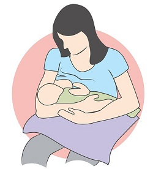
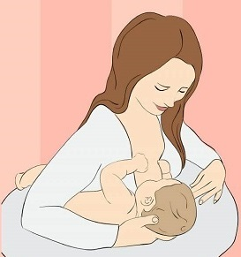
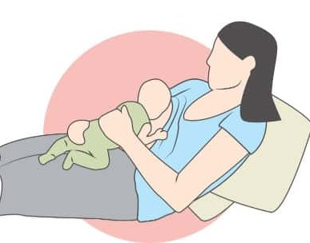

Best Breastfeeding Position

Cradle Position(in picture)
- Lie your baby across your lap, facing you
- Place your baby's head on your forearm – nose towards your nipple. Your hand should support the length of their body
- Place your baby's lower arm under yours
- Check to make sure your baby's ear, shoulder and hip are in a straight line

Football Position(in picture)
- Position your baby at your side, facing you, with baby's legs are tucked under your arm on the same side as the breast you're nursing from.
- Support your baby’s head with the same hand, and use your other hand to cup your breast as you would for the cradle hold.

Laid-back Position(in picture)
- Lie back in a reclined position on your bed, a sofa or a chair and get comfortable
- Place the baby on your stomach with his belly touching yours and his head up at the level of your breasts
- As the baby lies on your chest, gravity will help him keep his position securely on your body